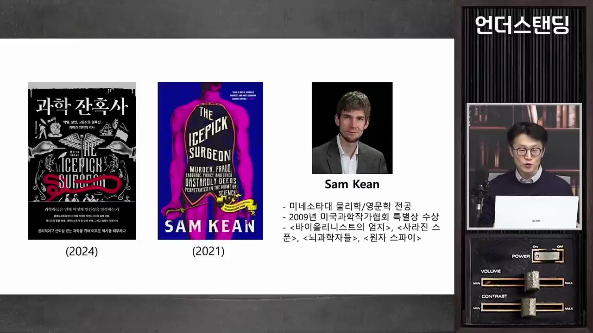
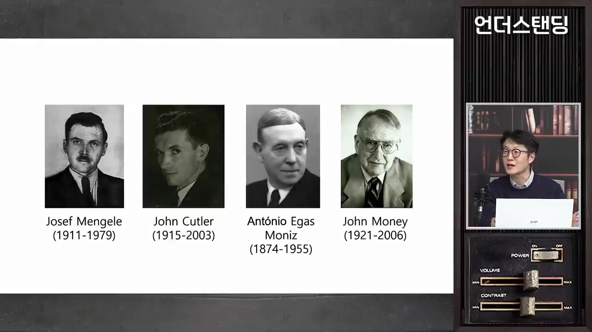
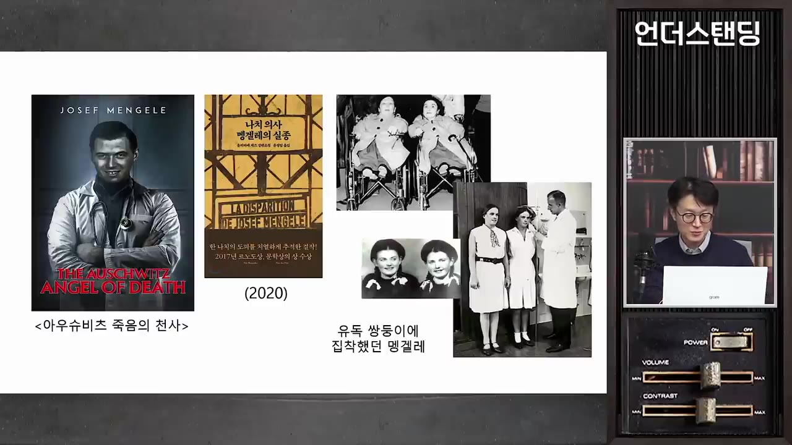
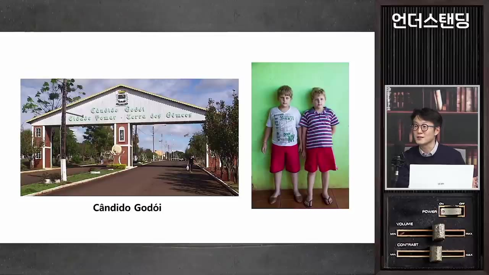
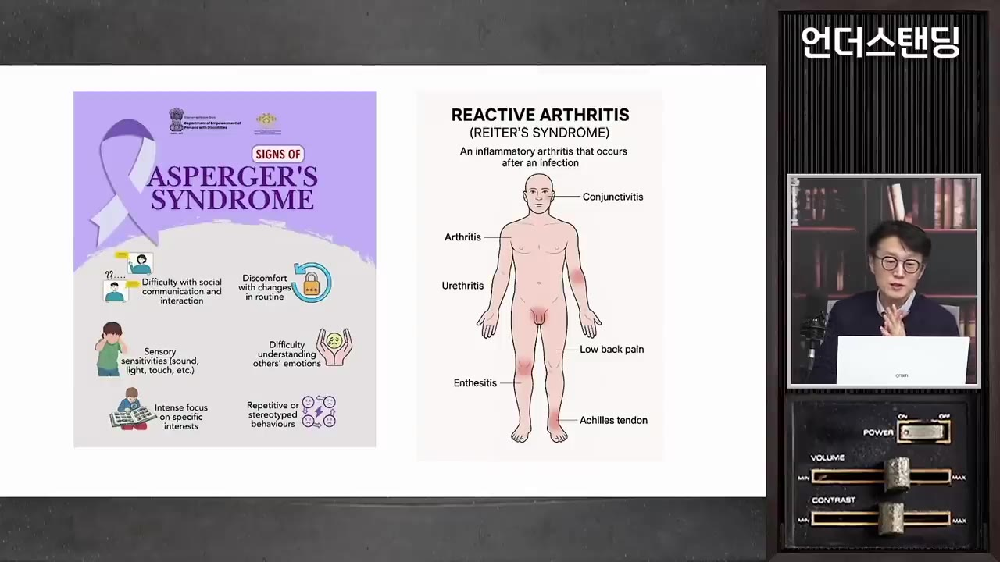
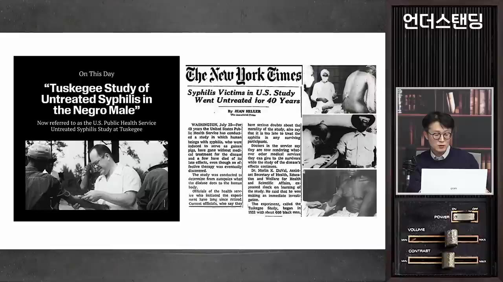
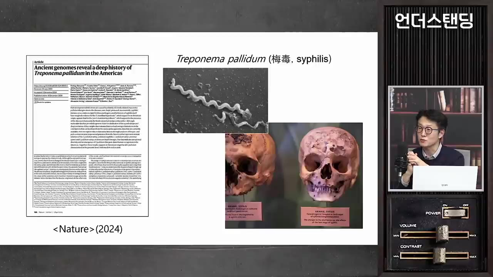

[과학 잔혹사 1부] "페니실린 주지 마" 비타민 주며 40년 매독 환자 관찰한 미국 의사와 쌍둥이 학실한 나치 의사들의 광기 (덕성여대 약학대학 정우현 교수)
🎙️ 자막 대신 영상 음성을 받아써서 정리 (ko (음성 받아쓰기·GPU))
▶ 원본 영상 보기한눈에 보기
- 정우현 교수가 샘 킨의 『과학 잔혹사』(원제: 얼음 송곳 의사)에 나오는 잔혹한 의사 4명 가운데 두 사례를 소개합니다. 하나는 나치 의사들, 다른 하나는 미국의 터스키기 매독 실험입니다.
- 나치 의사들은 "더 건강하고 이상적인 세상"을 내세워 바닷물 먹이기, 저체온 같은 생체 실험을 했습니다. 요제프 멩겔레는 쌍둥이를 대조군으로 삼아 쌍둥이 1,600명을 죽였습니다.
- 미국 공중보건국은 흑인 매독 환자 400명에게 병명도 알리지 않고 40년 동안 치료하지 않았습니다. 페니실린이 나온 뒤에는 다른 병원과 군에 "치료하지 말라"는 공문까지 보냈습니다.
- 이 실험은 내부 고발로 40년 만에 멈췄습니다. 미국 정부의 공식 사과와 보상은 그로부터 20여 년 뒤인 1997년에야 이루어졌습니다.
- 나치는 미국의 우생학 불임수술을 따라 했습니다. 의료윤리 규범에는 강제력이 없으니 시민이 계속 지켜봐야 한다는 것이 결론입니다.
이런 분께 도움이 됩니다
- 의학 발전 뒤에 숨은 비윤리적 실험의 역사를 짧게 알고 싶은 분
- "비윤리적 실험으로 얻은 지식을 써도 되는가" 같은 의료윤리 쟁점을 생각해 보고 싶은 분
- 매독, 쌍둥이, 태아 성 분화에 얽힌 생물학 상식을 재미있게 얻고 싶은 분
핵심 내용
책과 저자: 『과학 잔혹사』와 샘 킨
- 미국 과학 전문 작가 샘 킨의 책입니다. 부제는 '약탈, 살인, 고문으로 얼룩진 과학과 의학의 역사'입니다. (1:56)
- 영어 원제는 『아이스픽 서전』(얼음 송곳 의사)입니다. 영화 '원초적 본능'에서는 얼음 송곳이 살인 도구였지만, 이 책에서는 치료 도구로 쓰입니다. (2:43)
- 샘 킨은 미네소타대에서 물리학과 영문학을 복수 전공했고, 과학 스토리텔링으로 미국 과학작가협회 상을 받았습니다. (3:38)

- 전작 『바이올리니스트의 엄지』: 파가니니의 놀라운 손 뻗기가 유전병인 엘러스-단로스 증후군(결합조직 콜라겐이 변성되는 병) 때문이었다는 이야기
- 전작 『사라진 스푼』: 갈륨은 조금만 따뜻해져도 녹습니다. 이 금속으로 만든 티스푼은 찻잔 속에서 사라집니다.
- 책 첫머리의 아인슈타인 인용: "훌륭한 과학자를 만드는 것은 지성이 아니라 인성이다."
- 한국어판 표지에는 의술의 상징인 아스클레피오스의 지팡이가 있는데, 지팡이를 감은 뱀이 빨갛게 변해 흘러내립니다. 의술이 잘못 쓰였다는 뜻입니다.
- 책에 나오는 과학자 12명 중 4명이 의사입니다. 교수는 이 넷을 '잔혹한 의사 월드컵 4강'으로 골랐고, 모두 20세기에 활동한 인물입니다.

역사상 첫 생체 실험: 클레오파트라 (탈무드와 플루타르코스의 기록)
- 교수가 낸 퀴즈의 답은 클레오파트라입니다. 태아의 성별을 언제 알 수 있는지 알아내려고 사형선고를 받은 시녀들을 강제로 임신시킨 뒤 배를 갈랐다고 합니다. (8:42)
- 결론은 "임신 6주면 성별을 알 수 있다"였지만, 오늘날 의학으로 보면 틀렸습니다. 생식기는 약 9주는 되어야 생깁니다.
- 이 이야기는 탈무드에 나옵니다. 이집트와 앙숙인 이스라엘 민족의 책이라 클레오파트라를 깎아내리려 했을 수 있습니다.
- 더 믿을 만한 사료도 있습니다. 플루타르코스 영웅전에는 클레오파트라가 사형수 수십~수백 명에게 뱀독, 식물독, 청산가리를 먹여 본 기록이 있습니다. (13:37)
- 가장 덜 고통스럽게 죽는 방법을 찾으려 한 것으로, 그 답이 독사에게 가슴을 물리는 것이었고 실제로 그렇게 자살했다는 이야기가 전해집니다.
- 수정
- 6주 전후
- 9주 전후
- 요즘 검사
- 1수정
염색체(XX·XY)는 이때 정해지지만 성별이 다 정해지는 것은 아닙니다. 드물게 Y가 있어도 SRY 유전자(자막상 '슬하의 유전자')에 변이가 생기면 여자가 될 수 있습니다. (11:15)
- 26주 전후
길이 약 1cm. 그전까지는 모두 양성의 기관을 다 가진 상태입니다. 6주에 호르몬 신호가 나와 뮐러관이 퇴화하면 남자, 볼프관이 퇴화하면 여자가 됩니다.
- 이때 호르몬이 교란되면 간성으로 태어날 수 있습니다. 영상에서는 인구의 약 1.5%라고 했습니다.
- 39주 전후
길이 약 5cm. 이때 생식기가 만들어집니다.
- 4요즘 검사
니프티(NIPT) 검사는 엄마의 피에 떠다니는 태아 DNA로 성별을 짐작합니다. 다만 XY라도 성별이 확정된 것은 아니어서 함부로 알려 주는 것은 위험합니다.
나치 의사들은 왜 생체 실험에 나섰나
- 나치는 뉘른베르크법으로 유대인을 차별했고, 아리아인이 아닌 인종은 희생시켜도 된다고, 나아가 희생시키는 것이 의무라고 여겼습니다.
- 의사들은 어느 직종보다 먼저, 그리고 많이 나치당에 들어갔습니다. 전체 의사의 50%가 가입했습니다. "사회의 병을 고친다"는 자기들의 이상과 나치 이데올로기가 맞았기 때문입니다. (15:33)
- 나치 2인자 루돌프 헤스는 "국가사회주의는 응용생물학이다"라고 했습니다. 다윈의 진화론을 변질시킨 사회진화론과 우생학을 정치에 강제로 적용한다는 뜻입니다. (16:27)
- 이들은 금연, 색소 든 가공식품 피하기, 유기농을 권했고 히틀러는 채식주의자에 동물 애호가였습니다. 하지만 그 '순수성'은 아리아인에게만 해당했습니다.
💡 그들은 끝까지 "더 아름다운 세상을 위해서였다"며 잘못이 없다고 항변했습니다.
나치 의사들의 생체 실험 (SS 최고 지휘관 하인리히 힘러의 요청)
| 실험 | 목적 | 내용과 결과 (영상 속 설명) |
|---|---|---|
| 눈동자를 파랗게 바꾸기 | 인공으로 아리아인을 만들 수 있는지 확인 | 눈에 잉크와 화학물질을 주사했고 모두 실명하거나 죽었습니다. 나치는 "안 되는 게 좋은 결론"이라 여겼습니다. |
| 마취 없이 팔다리 잘라 이식하기 | 전쟁 부상병 치료법 연구 | 멀쩡한 유대인에게 시험했습니다. |
| 바닷물만 마시고 버티기 | 난파한 해군이 구조될 때까지 며칠 버티는지 | 토마토 추출물과 설탕으로 짠맛을 가려 억지로 마시게 했습니다(다하우 수용소 기록). 며칠 살았는지는 기록이 없습니다. |
| 얼음물 속에서 버티기 | 모스크바 원정 육군의 동상과 저체온 대비 | 체온을 28도까지 내린 뒤 되살릴 수 있는지 실험했습니다. |
- 바닷물 실험: 사람은 물을 못 마시면 3~4일밖에 못 삽니다. 몸의 약 70%가 물인데 그 3분의 1만 잃어도 탈수로 죽습니다. 바닷물은 염분 때문에 탈수를 더 앞당깁니다. (20:16)
- "몸의 70%가 물"이라는 사실도 사람을 거대한 원심분리기에 돌려 알아냈다는 이야기가 있습니다.
- 저체온 실험: 체온 34도면 의식을 잃고 혼수에 빠질 수 있고, 28도면 곧바로 심장이 멎는 온도입니다. (22:05)
- 결과: 데일 만큼 뜨거운 물 욕조에 단번에 담가 체온을 빨리 올리는 쪽이 화상을 입더라도 살아날 가능성이 높았습니다. 천천히 데우면 세포가 터지고 쇼크와 뇌출혈이 올 수 있다고 했습니다.
- 냉동인간을 다시 깨울 때 빨리 데울지 천천히 데울지는 지금도 중요한 쟁점입니다.
나치 실험 데이터를 써도 되는가
- 미국 의사협회는 의료윤리 지침으로 이런 자료를 공개하거나 강연·문서에 쓰지 못하게 합니다. (23:21)
- 다만 생명이 위태롭고, 더 윤리적인 방법으로 얻은 대체 자료가 없을 때는 예외로 쓸 수 있게 합니다.
- 비과학적으로 진행된 실험이 많아 결과를 검증할 수 없다는 문제도 있습니다.
요제프 멩겔레: '아우슈비츠의 죽음의 천사'와 쌍둥이
- 별명은 '죽음의 천사'입니다. 아이들에게 잘해 줘서 아이들이 따랐지만, 불려 간 아이는 돌아오지 않았습니다. (24:52)
- 총 40만 명에게 생체 실험을 했다는 증거가 있다고 합니다. 아우슈비츠 근무는 2년이었으니 하루도 쉬지 않아도 하루 500명이 넘습니다. 팀 단위로 조직적으로 했다는 뜻입니다.
- 앞선 실험들과 달리 대조군(아무 처리도 하지 않고 비교하는 집단)을 썼습니다. 유전 조건이 같은 쌍둥이에서 한쪽만 실험해 차이를 봤고, 일란성 쌍둥이가 들어오면 기뻐했다고 합니다. (25:47)
- 그가 죽인 쌍둥이만 1,600명입니다.
- 산 채로 해부해 장기를 맞바꾸기도 했습니다. 일란성이라도 앓아 온 병, 면역 체계, 후성유전(환경에 따라 유전자 작동이 바뀌는 것)이 달라 실패할 수 있습니다.
- 가장 끔찍한 실험은 쌍둥이의 몸 일부를 잘라 꿰매 샴쌍둥이를 만드는 것이었고, 대부분 괴사로 실패했습니다. (27:43)

전범 재판과 멩겔레의 도주, 쌍둥이 마을
- 전쟁이 끝난 뒤 뉘른베르크 국제군사재판에서 의사 20명이 기소되고 7명이 교수형을 받았습니다.
- 멩겔레는 재판을 한 번도 받지 않았습니다. 여권을 위조해 아르헨티나로, 다시 브라질로 달아나 이름을 바꾸고 30여 년을 살았고 재혼도 했습니다. (28:38)
- 미국과 이스라엘 정부기관이 쫓았지만 끝내 찾지 못했습니다. 죽은 뒤 무덤을 파 유골 DNA를 검사해 본인임을 확인했습니다.
- 그가 살던 브라질의 마을(약 6,000명)은 세계에서 쌍둥이 출산율이 가장 높은 곳입니다. (29:26)
- 보통은 임신부 약 80명 중 1명이 쌍둥이를 낳는데, 이 마을은 5명 중 1명꼴로 약 16배입니다. 주민은 폴란드와 독일에서 온 이민자가 많습니다.
- 멩겔레가 무슨 짓을 했다는 음모론이 돌았지만, 그는 1950년대에 왔고 마을은 1900년대 초부터 쌍둥이가 많았습니다. 멩겔레가 마을이 마음에 들어 눌러앉은 것입니다. (30:19)
- 쌍둥이와 유전: 한 번에 난자가 2~4개 나오는 과배란 체질은 유전될 수 있어 이란성 쌍둥이와 관련이 있습니다. 일란성은 수정란이 우연히 갈라져 생기므로 유전 요인이 사실상 없습니다.

나치 의사 이름이 붙은 병명은 바꿔 부른다
- 아스퍼거 증후군은 장애 아동을 살해 시설로 보낸 정황이 있는 한스 아스퍼거의 이름에서 왔습니다. 2013년부터는 '자폐 스펙트럼 장애'로 통일해 부릅니다. (32:15)
- 라이터 증후군(관절염의 한 종류)은 강제수용소 수감자를 실험한 나치 고위 보건 관료 한스 라이터의 이름에서 왔고, 지금은 '반응성 관절염(reactive arthritis)'으로 부릅니다. (33:09)
- 나치에 복무한 의사 이름이 붙은 병명이 30개가 넘는다고 합니다.
- 전범 기업들은 이름과 분야를 바꿔 살아남았습니다. 교수는 확실히 말할 수는 없다면서도 그때의 노하우가 남아 있을 것이라고 봤습니다.
💡 병의 이름이 어디서 왔는지 알고 공부하는 것도 이 역사를 기억하는 방법입니다.

터스키기 매독 실험: 미국 공중보건국이 40년간 치료를 막다
- 두 번째 의사는 미국 연방 공중보건국의 백인 의사 존 커틀러입니다. 흑인 매독 환자 400명을 치료하지 않고 놔둔 채 병이 어떻게 진행되는지 관찰했습니다. (35:55)
- 목적: 3기에 몸이 망가지는 과정을 연구하는 것. 치료하면 3기까지 가지 않으니 치료하지 않았습니다.
- 결과: 160명 넘게 매독과 그 합병증으로 숨졌습니다.
- 미국 남동부의 터스키기를 고른 이유는 세 가지입니다. (36:52)
- 매독 감염률이 약 40%로 높았습니다.
- 외부와 단절된 조용한 동네였습니다.
- 결정적으로, 흑인이 많아 "마음대로 실험해도 된다"는 생각이 작용했습니다.
- 환자들에게는 매독이라는 사실조차 알리지 않았습니다. "나쁜 피(bad blood)가 있다"며 철분제, 비타민, 아스피린처럼 아무 효과 없는 약만 줬습니다. (44:10)
- 실험 결과로 유명 의학 저널에 논문을 13편이나 냈는데, 어떻게 얻은 결과인지 묻는 사람이 아무도 없었습니다.
- 실험 시작
- 페니실린 등장
- 외부 치료 차단
- 군대까지 개입
- 내부 고발 묵살
- 언론 폭로
- 상원 청문회
- 공식 사과
- 1실험 시작
1932년(영상 설명란 기준) 흑인 매독 환자 400명을 모아 병명을 숨긴 채 효과 없는 약만 줬습니다.
- 2페니실린 등장
시작한 지 10년 만에 페니실린이 나와 다른 지역에서는 매독을 고쳤지만, 고립된 터스키기에는 알려지지 않았습니다.
- 3외부 치료 차단
젊은 흑인들이 다른 곳에서 치료받을까 봐 정부 승인을 받아 외부 병원에 "터스키기 사람은 치료하지 말라"는 공문을 보냈습니다.
- 4군대까지 개입
2차 대전에 파병된 청년들에게 매독이 발견되면 치료하지 말고 돌려보내라는 승인을 육군에서 받았습니다.
- 5내부 고발 묵살
공중보건국에서 성병 조사를 맡던 피터 벅스턴이 문제를 제기했지만 6년 동안 묵살됐습니다.
- 6언론 폭로
벅스턴이 퇴사하며 친구 기자에게 알렸고, 40년 만에 세상에 알려져 1973년에 실험이 멈췄습니다.

뉴욕타임스 폭로 기사 "Syphilis Victims… Went Untreated for 40 Years" · ▶ 35:54 - 7상원 청문회
의사들은 "어차피 가난해 치료받을 돈도 없고 죽을 사람들인데 의학 발전에 쓰면 뭐가 문제냐"고 강변했습니다.
- 8공식 사과
20여 년 뒤인 1997년 빌 클린턴 대통령이 희생자와 유가족에게 처음으로 공식 사과하고 보상했습니다.
매독은 어떤 병인가
- 지금은 항생제를 맞으면 약 일주일 만에 낫고, 3기까지 가도 항생제로 치료됩니다. 그런데도 미국과 일본의 20~30대를 중심으로, 한국에서도 환자가 늘고 있습니다. (37:42)
- 계속 퍼지는 이유는 병의 단계마다 특징이 다르기 때문입니다.
- 1·2기: 붉은 반점과 궤양이 사타구니나 항문처럼 잘 보지 않는 곳에 생기고, 가렵거나 아프지 않습니다. 잠복기에 들어가면 사라져 그냥 넘기기 쉽지만 이때 전염력이 높습니다.
- 3기: 간, 심장 같은 장기가 상하고, 중추신경을 타고 뇌에 들어가면 치매, 언어장애, 정신질환이 생깁니다. (38:36)
- 백신이 없습니다: 매독균은 항체를 만들 항원이 적고 그마저 계속 바뀌어 면역이 잘 생기지 않습니다.
- 균의 이름은 트레포네마 팔리둠(Treponema pallidum)입니다. 와인 따개처럼 꼬불꼬불한 나선형이라 조직에 잘 파고들고, 현미경으로 바로 알아볼 수 있습니다. (39:34)
- 우리말 '매독'의 '매'는 매화(梅)입니다. 매화꽃처럼 붉은 발진이 난다는 뜻입니다.

매독은 어디서 왔고, 이름은 어떻게 정해졌나
- 유럽에 처음 나타난 것은 1493년 스페인 바르셀로나입니다. 바로 전해인 1492년에 콜럼버스가 아메리카에서 돌아왔고, 콜럼버스 자신도 매독으로 죽었다는 설이 있습니다. (41:23)
- 영상 기준 2년 전에 나온 네이처 논문이 이를 뒷받침했습니다. 콜럼버스 이전 아메리카인 유골의 뼈(3기 매독이 뼈까지 침투한 흔적)에서 매독균 유전체를 찾았는데, 같은 시기 유럽에서는 나오지 않았습니다.
- 퍼진 경로는 스페인 → 프랑스 → (프랑스가 나폴리를 점령하며) 이탈리아입니다. 나라마다 싫어하는 나라 이름을 붙였습니다.
| 부른 나라 | 매독을 부른 이름 |
|---|---|
| 이탈리아 | 프랑스 병 |
| 프랑스 | 나폴리 병 |
| 러시아 | 폴란드 병 |
| 폴란드 | 독일 병 |
- 혼란을 없애려고 '시필리스(syphilis)'로 이름을 통일했습니다. 라틴어 시에 나오는, 신에게 반역했다가 벌을 받은 목동의 이름입니다. 시인은 자막에 '이스라엘의 시인'으로 나오는데 정확하지 않을 수 있습니다(자막상 불분명). (43:15)
- 1940년대 페니실린 전에는 수은이나 비소로 치료했는데, 독성 때문에 사람도 죽었습니다. 항생제 개발 자체가 매독을 이기려는 노력에서 시작됐다고 합니다.
나치는 미국에서 배웠다, 그리고 남은 교훈
- 교수는 페니실린이 있는데도 실험을 계속한 이유를 '앞을 내다본 지식에 대한 과욕과 호기심'으로 추측했습니다. 진행자는 의사들끼리는 나치 실험 데이터가 의학에 기여했다는 분위기가 있었을 것이라고 덧붙였습니다. (49:58)
- 나치의 강제 불임수술(단종법)은 캘리포니아 등 미국에서 먼저 했던 우생학 정책을 따른 것입니다. (50:56)
- 미국은 지체장애인, 유전병 환자, 흑인 등 수만 명에게 강제 불임수술을 했습니다.
- 나치는 전범 재판에서 "미국이 한 걸 따라 했을 뿐"이라고 했고, 미국은 나치를 강하게 비판하지 못했습니다. (51:56)
- 세계의사회의 헬싱키 선언(의료윤리 규범)은 해마다 고쳐지지만 강제력이 없습니다. "이 지식은 어떻게 얻은 것인가"를 시민이 계속 묻고 지켜봐야 한다는 것이 교수의 결론입니다.
- 다음 편에서는 얼음 송곳으로 뇌를 수술한 세 번째 의사를 다룹니다.
💡 정신을 바짝 차리지 않으면 이런 흑역사는 어디서든 되풀이될 수 있습니다.
기억할 숫자·인용
- "훌륭한 과학자를 만드는 것은 지성이 아니라 인성이다." — 아인슈타인(책 첫머리)
- "국가사회주의는 응용생물학이다." — 루돌프 헤스
- 나치당에 가입한 의사: 전체 의사의 50%
- 나치의 저체온 실험: 체온을 28도까지 낮춤(34도만 돼도 의식을 잃을 수 있음)
- 멩겔레: 생체 실험 40만 명(2년 근무, 하루 500명 이상), 죽인 쌍둥이 1,600명
- 뉘른베르크 재판: 의사 20명 기소, 7명 교수형
- 브라질 쌍둥이 마을: 임신부 5명 중 1명이 쌍둥이(보통 80명 중 1명, 약 16배)
- 터스키기: 환자 400명, 약 40년(1973년까지), 160명 넘게 사망, 지역 감염률 약 40%, 논문 13편, 내부 고발 묵살 6년, 1997년 클린턴 대통령 공식 사과
- 매독이 유럽에 처음 나타난 해: 1493년(콜럼버스 귀환 다음 해)
- 아스퍼거 증후군 → 2013년부터 '자폐 스펙트럼 장애'로, 나치 의사 이름이 붙은 병명 30개 이상
- "어차피 치료받을 돈도 없고 죽을 사람들인데 의학 발전에 쓰면 뭐가 문제냐." — 상원 청문회에서 의사들의 말(영상 속 요약)
생각해볼 점
- 영상의 출처는 책 내용과 교수가 따로 조사한 내용이 섞여 있습니다. 교수도 "책에 나오는 것도 있고 제가 조사한 것도 있다"고 했습니다. 멩겔레의 '40만 명', 원심분리기로 '몸의 70%가 물'임을 알아냈다는 이야기, 간성 '1.5%' 같은 수치는 원 출처를 따로 확인하는 것이 좋습니다.
- (내 의견) 터스키기 실험의 주요 인물을 존 커틀러 한 사람으로 소개했는데, 이 실험에는 여러 연구자가 대를 이어 관여했습니다. 커틀러는 과테말라 매독 감염 실험으로도 알려진 인물이니 다른 자료와 함께 보면 전체 그림이 더 정확해집니다.
- "비윤리적으로 얻은 데이터를 생명을 구하는 데 써도 되는가"에 영상은 미국 의사협회의 '예외적 허용'을 소개하는 데 그쳤습니다. 데이터를 쓰면 실험을 사실상 인정하는 셈이라는 반론과, 쓰지 않으면 희생이 헛되어진다는 시각이 함께 있습니다.
바로 해볼 일
- 다음 편(얼음 송곳으로 뇌를 수술한 의사)이 올라오면 이어서 보기
- 관심 있는 병의 이름이 어디서 왔는지(사람 이름인지, 바뀐 이름인지) 하나 찾아보기
- 헬싱키 선언의 핵심 원칙(사전 동의, 피험자 보호)을 검색해 읽어 보기